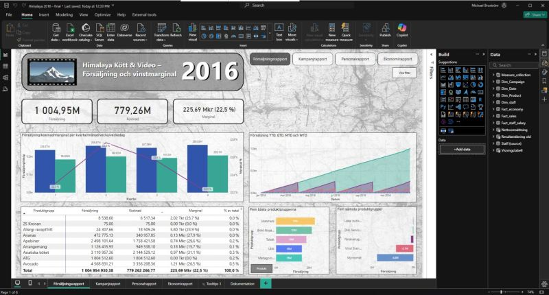

BI-analytiker · Data & AI BI Analyst · Data & AI
Data → Insikt → Beslut Data → Insight → Decision
Engagerad analytiker med rötter i systemutveckling och kommunikation. Specialiserad på att destillera komplex data till tydliga, datadrivna beslutsunderlag. Engaged analyst with roots in systems development and communication. Specialised in distilling complex data into clear, data-driven insights.
// karriärskifte mot Business Intelligence // career transition towards Business Intelligence
Systemprogrammerare i grunden — Högskolan i Skövde 1988–1991 — som under de senaste 30 åren arbetat som översättare och skribent. Nu genomför jag en planerad kursändring mot Business Intelligence med fokus på att destillera komplex information till tydliga, datadrivna budskap. Systems programmer by training — University of Skövde 1988–1991 — who spent the past 30 years as a translator and writer. I am now making a deliberate career change towards Business Intelligence, focused on distilling complex information into clear, data-driven messages.
Kombinationen av teknisk bakgrund, kommunikationsförmåga och analytisk förmåga skapar en unik profil — någon som förstår både maskinen och mottagaren. The combination of a technical background, communication skills and analytical thinking creates a unique profile — someone who understands both the machine and the message.
// kompetensöversikt · utbildningsdata · live // skills overview · education data · live
| KompetensSkill | NivåLevel | PoängScore | KategoriCategory |
|---|
// YH Akademin · Högskolan i Skövde
400 YH-poäng · Alla former av databearbetning och visualisering, från backend (ETL/SQL) till frontend (Power BI/Dashboarding). Inkluderar Python, Machine Learning, Cloud Solutions och projektmetodik. 400 credits · All forms of data processing and visualisation, from backend (ETL/SQL) to frontend (Power BI/Dashboarding). Includes Python, Machine Learning, Cloud Solutions and project methodology.
Bred överlappning med BI-utbildningen: SQL, databasmetodik och diverse programmering. Grundlade ett tekniskt tänkande som löper som en röd tråd genom hela karriären. Broad overlap with the BI education: SQL, database methodology and various programming. Established a technical mindset running as a thread through the entire career.
// IoT · Machine Learning · Power BI
Kombinerar realtidsdata från solcellsanläggning med väderprognoser och elmarknadens spotpriser (SE4). Machine Learning (HistGBR) för prediktion och linjärprogrammering (PuLP) för att minimera hushållets elkostnader. Combines real-time solar panel data with weather forecasts and electricity spot prices (SE4). Machine Learning (HistGBR) for prediction and linear programming (PuLP) to minimise household electricity costs.
Läs mer →Read more →Djupdykning i bildklassificering av handskrivna siffror. Utvärderade KNN och Random Forest, valde optimerad SVC. Avancerad bildbehandling med dimensionsreducering och dataaugmentering. Resulterade i en interaktiv webbapp. Deep dive into handwritten digit classification. Evaluated KNN and Random Forest, chose optimised SVC. Advanced image preprocessing with dimensionality reduction and data augmentation. Result: interactive web app.
Se presentation →Watch presentation →
Interaktiv analyslösning för fyra affärsområden: Ekonomi (resultaträkning, YTD), Försäljning (drill-down, Topp 5/Botten 5), Kampanjanalys och HR-rapport med löne- och korrelationsanalys. Interactive analytics solution for four business areas: Finance (income statement, YTD), Sales (drill-down, Top 5/Bottom 5), Campaign Analysis and HR Report with salary and correlation analysis.
Se dashboard →View dashboard →// LIA · Copywriter · Microsoft
Ett flertal Business Intelligence-uppgifter i verklig affärsmiljö. Praktisk tillämpning av utbildningens alla delar — från ETL och datamodellering till rapportbygge och visualisering. Multiple Business Intelligence assignments in a real business environment. Practical application of all parts of the education — from ETL and data modelling to report building and visualisation.
Lång erfarenhet av kravfångst och att omvandla komplex data till mätbar effekt för specifika målgrupper. Förmågan att göra det tekniska begripligt är direkt överförbar till BI-rollen. Extensive experience gathering requirements and converting complex data into measurable impact for specific audiences. The ability to make the technical comprehensible transfers directly to the BI role.
Ansvarade för lokalisering av Office-paketet för Mac. Hanterade komplexa terminologiordlistor och style guides i en internationell miljö med höga krav på precision och konsistens. Responsible for localisation of the Office suite for Mac. Managed complex terminology glossaries and style guides in an international environment with high demands for precision and consistency.